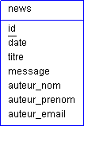
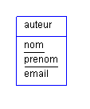
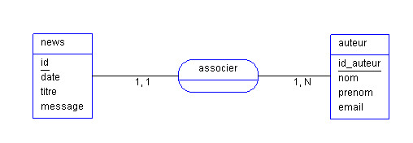

Un novice va être content lorsqu'il aura réussi à sélectionner les champs qui l'intéressent. Mais imaginez, après un peu de réflexion, vous vous dites : "flûte, ma base n'est pas bien faite, j'ai une redondance d'information". En effet, votre table ressemble à ceci :

Comme on peut le remarquer, si vous avez trois personnes qui postent des news à chaque fois, vous aurez les informations de l'auteur qui vont revenir. Pas super optimisé, surtout si on doit faire un tri sur les champs auteur_nom et auteur_prenom. De plus, il est déconseillé de travailler sur des champs de type chaîne de caractères (du fait de leur complexité, entier est plus simple à tout point de vue).
Il serait en effet bon d'optimiser un peu cela. Nous allons donc réfléchir un petit peu. Nous avons un auteur qui peut être identifié par son nom, son prénom :

Encore une fois, pour faire des opérations sur cette table, pas super, surtout qu'il faut encore mettre le nom et le prénom de l'auteur dans la table
news
. On a gagné un seul champ mais nous n'avons pas facilité le travail pour le serveur. Nous allons donc lui attribuer un id. Nos deux tables seront plus claires. Maintenant nous associons nos deux tables et nous arrivons au schéma suivant :

On retrouve toujours nos deux tables news et auteur. On peut voir une "bulle" entre ces deux tables avec le nom associer, ceci s'appelle une relation car nous avons mis nos deux tables en relation (simple, non ? ^^ ). Une relation est TOUJOURS un verbe à l'infinitif. Entre la relation et la table news, il y a un trait avec en dessous 1,1 ceci s'appelle une cardinalité. Même chose entre la relation et la table auteur. Il existe quatre cardinalités :
0 , 1 : au minimum 0 fois et au maximum 1 fois ;
0 , N : au minimum 0 fois et au maximum N fois ;
1 , 1 : 1 et 1 seul fois ;
1 , N : au minimum 1 fois et au maximum N fois.
En fait ici, pour comprendre le schéma, il faut lire :
une news est associée à 1 et 1 seul auteur ;
un auteur est associé à 0 ou à N news.
Maintenant que vous avez compris le principe, je vous laisse réfléchir au code SQL pour la création de ces deux tables. Alors, vous avez trouvé ? Facile, non ?
CREATE TABLE auteur (
id_auteur int(3),
nom varchar(100),
prenom varchar(100),
email varchar(200)
);
CREATE TABLE news (
id int(3),
Date_news date,
titre varchar(255),
message text,
id_auteur int(3)
);
ALTER TABLE auteur ADD CONSTRAINT PK_auteur PRIMARY KEY (id_auteur);
ALTER TABLE news ADD CONSTRAINT PK_news PRIMARY KEY (id);
Je suis sûr que vous avez oublié quelque chose !! Et je l'ai omis volontairement. ^^ En fait, il faut indiquer à notre SGBD (Système de Gestion de Base de Données) que la clé id_auteur de la table news fait référence à l'id_auteur de la table auteur. Pour cela, il faut créer une contrainte de clé étrangère :
Eh bien, une requête dans une autre requête :-° , ça vous suffit comme explication ? :lol:
Une requête "standard" s'écrit souvent comme ceci :
SELECT * FROM ma_table WHERE id=1;
Ceci est suffisant pour une requête mono-table. Mais lorsqu'il y a plusieurs tables, et que nous voulons récupérer les news de DUPONT Marcel qui a pour id 2, le programmeur non initié correctement va faire minimum deux requêtes, une première pour récupérer l'id de l'auteur dans la table auteur :
SELECT id_auteur FROM auteur WHERE nom='Dupont' AND prenom='marcel';
puis une deuxième pour récupérer la news :
SELECT * FROM news WHERE id_auteur='2';
Mais vous ne remarquez pas quelque chose ? Le résultat de la 1ère requête est directement injecté dans la deuxième.
Pourquoi alors ne pas faire une seule requête ?
Allez, on réfléchit ^^ . Vous avez trouvé ?
D'accord, je vous le donne :
SELECT * FROM news WHERE id_auteur=(SELECT id_auteur FROM auteur WHERE nom='Dupont' AND prenom='marcel');
Ainsi, nous avons deux requêtes exécutées en une fois. Vous savez maintenant ce qu'est une requête imbriquée. Cette méthode est simple car très naturelle, mais peut vite se transformer en casse-tête.
L'inconvénient de cette première méthode est que le SGBD va quand même exécuter deux requêtes. Ici, on ne va faire qu'une seule belle requête.
Maintenant, on va faire une vraie sélection multiple, c'est-à-dire que nous allons faire une seule requête mais sur plusieurs tables. Comme pour la première méthode, nous allons sélectionner les news postées par DUPONT Marcel. Nous allons sélectionner tous les champs de la table news :
SELECT n.* FROM news AS n
Ensuite, il faut savoir de quelles tables nous allons avoir besoin : ici, pas de problème, notre base de données ne contient que deux tables : news et auteur, donc notre requête se complète :
SELECT * FROM news AS n, auteur AS a
Nous posons nos conditions de sélection : nous voulons que le champ id_auteur de la table news soit égal au champ id_auteur de la table auteur, pour lequel le champ nom est égal à DUPONT et le champ prenom à Marcel. Maintenant que nous avons écrit clairement notre condition, on va la transcrire en langage SQL.
WHERE n.id_auteur = a.id_auteur AND nom="DUPONT" AND prenom="Marchel"
Notre requête de sélection est :
SELECT * FROM news AS n, auteur AS a WHERE n.id_auteur = a.id_auteur AND nom="DUPONT" AND prenom="Marchel"
Je vous conseille de ne pas écrire vos requêtes sur une seule et même ligne. Je me suis permis de le faire car elle toute petite, mais lorsque vous aurez de plus grosses requêtes, cela deviendra illisible. Préférez les écrire comme ceci :
SELECT *
FROM news AS n, auteur AS a
WHERE n.id_auteur = a.id_auteur
AND nom="DUPONT"
AND prenom="Marchel"
Vous savez maintenant créer de super belles requêtes de sélection multi-tables. En fait, ce n'est pas si dur que ça. ;)
Voilà, ce tuto est fini. J'espère que vous êtes maintenant des pros des sélections multi-tables ;) .
Il ne reste plus qu'à faire une seule chose ! Trouver une application pour ces jolies requêtes :lol: .